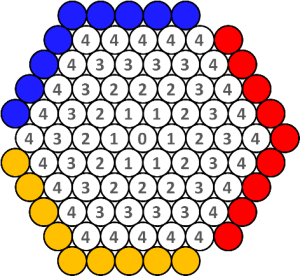

New Game: Snype
Should be working, resisting, made this:
http://nickbentleygames.wordpress.com/2012/05/19/new-game-snype/
This game represents progress on a problem I’ve been working on for a long time: to improve the gameplay of The Game of Y, especially when it’s played on a hexhex board, my favorite of all regular tilings. Y has what is regarded by many as one of the most beautiful win conditions, but gameplay falls flat for me, on account of the supreme importance of the center of the board, which limits the effective branch factor and opportunities for creative moves. This is true for me even on the “modified topology” boards which are supposed to address the issue.
I’ve taken a bunch of stabs at solving this problem, and I’ve posted a couple (see here and here). Snype, I’m betting, will be better than my earlier attempts. I say this even though I haven’t played it – I’m willing to go out on a limb because Snype resides in a region of game-space I understand well.
As always, I’ll start with the rules and then explain why they are the way they are.
Snype is a game for 2 players, played with black and white stones, on this initially empty board (actually, you should play on a board larger than this. This is just for illustration. 7 cells on a side is good):

Rules
• To begin, one player places a white stone on any empty space, and the other player decides whether to play as White or Black.
• From then on, starting with Black, the players take turns. A turn consists of two actions, which may be performed in any order: 1) place a stone of your color on any numbered empty space; and 2) optionally, move a stone in a straight line, any number of spaces up to the number on the space from which it starts, so that it lands on an empty numbered space. No jumping allowed.
• The game ends when one player creates a connected group of stones which is adjacent to at least one blue, one yellow and one red space. He wins.
What’s the deal?
The inspiration for Snype starts with the game Slither. Slither has a similar “place a stone, move a stone” turn protocol, except in Slither you can only move a stone one space. This protocol has turned out to be magnificent for connection games because it improves their weakest feature, tactics, while leaving intact the strategic contours which make connection games great in the first place. It also dramatically increases the meaningful branch factor.
So I wondered: is there a way to solve the center-problem of Y by employing a modified version of the 'place and move' turn protocol? The answer was obvious: make center stones weaker by giving them less freedom to move. And so Snype was born.
One open question is whether the pie rule is sufficient for balancing the game. There’s a good chance it won’t be. I don’t think I’ll be able to deal with this issue, if it is an issue, until I’ve playtested the game a bunch, so for now it remains an open question.